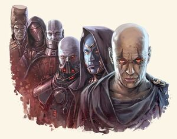
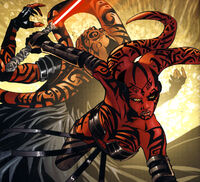
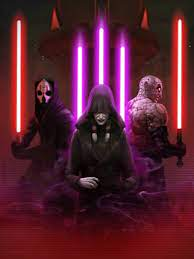

Ситхи
Ситх (англ. Sith) — адепт Силы, придерживавшийся пути Тёмной стороны и определённого кодекса ордена ситхов.
Первоначально термин «ситх» обозначал лишь расу с Коррибана, но после её порабощения тёмными джедаями стал применяться и по отношению к приверженцам Тёмной стороны. Тёмные джедаи сформулировали новый кодекс, который и лег в основу идеологии ситхов.
Само учение ситхов преследовалось гонениями со стороны джедаев, так как оно полностью противоречило их учениям: «Покой это ложь, есть только страсть» — гласит кодекс ситхов, «Нет эмоций, есть покой… Нет страстей, есть ясность мыслей» — говорит совершенно другое кодекс джедаев.
Ситхи были самыми известными последователями Тёмной стороны и рассматривались как вершина иерархии организаций Тёмной стороны. На протяжении галактической истории ситхи правили несколькими империями и инициировали множество галактических войн. Под влиянием ситхов также создавались тайные культы, такие как наддисты, краты и Орден Мекроза.
Философия
Следование кодексу
«Спокойствие — это ложь, есть только страсть. Со страстью я приобрету силу. С силой я приобрету могущество. С могуществом я приобрету победу. С победой я разорву свои цепи. И Великая Сила освободит меня.». — Кодекс ситхов
В кодексе утверждается, что истинную силу можно получить, только отдавшись своей страсти, которая даёт силу, а затем приведет к победе. Таким образом, ситхи утверждали, что на своем пути к победе они становились выше обычных существ и раскрывали свой истинный потенциал. Неопытные ситхи считали, что последняя строчка об освобождении от оков означала возможность делать все что желается, однако, более опытные члены ордена полагали, что она означает полную свободу от физических ограничений и достижение совершенства. Ситхи считали, что единственным живым существом в галактике, которое могло жить, соблюдая все пункты кодекса мог быть только Сит’ари, который видел в нем не свод законов, а смысл жизни
Выкованные пламанем
Ситхи считали конфликт единственной подлинной проверкой своих возможностей и по этой причине придавали ему много значения. Они были убеждены, что конфликт, будь то конфликт между двумя индивидуумами или цивилизациями, неизбежно заставляет их развиваться и расти. Ситхи верили, что любое избегание конфликтов, которое, к примеру, проповедует орден джедаев, является результатом стагнации и упадка.
Другой важной задачей конфликтов было возвышение сильных и смерть слабых. Ключевыми элементами философии ситхов были те идеи, в которых индивид заслуживает только то, что он в состоянии забрать сам, а также то, что каждый должен рассчитывать только на свои собственные силы. Кроме того, мораль считалась препятствием, которое необходимо было преодолеть, потому что она стояла на пути ситха к самопознанию и самосовершенствованию.
Эта философия преподавалась в академиях ситхов, где студенты должны были соревноваться друг с другом за престиж и поощрение главы академии. Во времена Гражданской войны джедаев студенты академии на Коррибане боролись не только за престиж, но и за право стать «избранным» ситхом в армии Дарта Малака. Погоня за престижем иногда приводила к открытой вражде студентов, которая даже могла привести к смерти одного из них.
Питаемые страстью
Краеугольным камнем мощи ситхов являлись их эмоции. В то время как джедаи считали, что страх, гнев и боль — это негативные эмоции, которые необходимо преодолевать и подавлять, ситхи верили, что эти сильные эмоции естественны и необходимы для выживания. Больше того, ситхи считали, что страсть — это единственный способ полностью постичь Силу. Тем не менее, ситхи также считали, что только сильный способен контролировать свои эмоции и использовать их, в то время как слабый контролировался собственными эмоциями. К примеру, тёмная леди ситхов Люмия отказалась присвоить Джейсену Соло ранг лорда ситхов до тех пор, пока он не научится контролировать и использовать свой гнев.
Однако не все эмоции поощрялись ситхами. Как и джедаи, они считали любовь опасной страстью, но по другим причинам. Если джедаи считали, что любовь приводит к привязанности, то ситхи учили, что любовь приводит к милосердию, что было для них недопустимым. Дарт Бэйн, который влюбился в ситха-ученицу по имени Гитани, отдалился от нее по своей воле и позже нисколько не сожалел об ее смерти на Руусане.
Ситх'ари
В ситском языке термин «Сит’ари» дословно переводится, как «лорд» или «архилорд». Со временем это слово стало обозначением некое совершенное существо, обладающее абсолютной властью и повелевающее орденом ситхов
В предсказании о приходе Сит’ари говорится о появлении идеального существа, олицетворяющего кодекс ситхов и не обремененного никакими ограничениями. Это существо должно повести за собой ситхов и затем уничтожить их — и это уничтожение сделает орден ситхов сильнее, чем прежде. Личность Сит’ари нигде и никогда не была обнародована, хотя многие и верили, что это Дарт Бэйн, который уничтожил Братство тьмы, чтобы затем преобразовать его и ввести правило двух.
Пророчество о Ситх'ари очень похоже на пророчество джедаев об Избранном.
Организации
Термин «сит» использовали также по отношению ко многим разрозненным организациям, связанным с тёмной стороной, которые собирались и распадались на протяжение тысяч лет галактической истории. Ни одна из этих организаций не смогла сдержать бдительность джедаев и каждый раз погибала, однако учение ситхов уничтожить было не так легко. Как только Орден джедаев начинал терять бдительность, из пепла вновь возрождался ситхский культ, братство, орден или империя, пытаясь установить свою власть в галактике.
Ситхи
Ситхи это вид краснокожих гуманоидов родом с планет Зиост и Коррибан. Ранее Ситхи были порабощены изгнанными Темными джедаями. До прихода Темных джедаев, Ситхи были разделены на своеобразные касты. Всего было четыре касты: гротту (ситхи-рабы), зугурак (ситхи-инженеры), массасси (ситхи-воины), киссаи (ситхи-маги). Со временем, Ситхи начали скрещиваться с людьми, при помощи Ситхской алхимии.
Массасси
Массасси являются одной из каст Ситхов. Во время правления Тёмных джедаев большинство массасси были пойманы и преобразованы с помощью тёмной алхимии Ситхов, которая сделала их более смертоносными и послушными. Массасси отличались костяными выростами и своими гигантскими размерами. По большей части преобразованные массасси служили в Империи ситхов в качестве солдат.
Империя ситхов
Империя ситхов была богатым и могущественным государством, основанным тёмными джедаями, изгнанными из Ордена и Галактической Республики после их поражения в битве при Корбосе во время Столетней Тьмы. После длительной изоляции ситхи под предводительством Тёмного лорда ситхов Наги Садоу вторглись в республику и развязали Великую гиперпространственную войну, в итоге проиграв ее. Предполагалось, что силы республики полностью уничтожили Империю ситхов во второй битве при Коррибане, однако, одному Тёмному лорду удалось сбежать с несколькими последователями, известными как Истинные ситхи, в Неизведанные Регионы, где он возродил Империю. Спустя некоторое время, Нага Садоу вновь напал на республику. По окончанию Великой войны, которая длилась на протяжении многих лет, Ситхи и Галактическая Республика подписали мирный договор. С этого момента они стали существовать, как отдельные и независимые государства.
Затерянное племя ситхов
В 5000 ДБЯ, корабль Ситхов «Знамение» разбился при посадке на планету Кеш. Те, кто пережили крушение, сформировали Затерянное племя ситхов. За тысячи лет Затерянное племя смогло развиться и обрести очень мощную силу. Вскоре после Второй галактической гражданской войны они были готовы исполнить свое предназначение, захватив ослабленную Галактику.
Краты
Краты были секретным сообществом ситхов, основанным Алимой и Саталом Кито. После атаки Крата на джедайский анклав, Улик Кель-Дрома пытался внедриться в группу, но в итоге перешел на тёмную сторону и возглавил секту. В течении Великой ситхской войны Крат стали главным военным подразделением Ордена ситхов Экзар Куна. Секта была уничтожена на Явине-4.
Империя ситхов Ревана
Империя Ситхов была временно восстановлена падшими джедаями Реваном и Малаком. Построенная на ядре из закалённых ветеранах Мандалорских войн и множестве новообращённых джедаев, новой молодой галактической власти очень рано удалось начать завоевание Республики, открыв Вторую Ситхскую войну. После искупления Дарта Ревана и смерти Дарта Малака, их империя раскололась на части и вскоре рухнула.
Триумвират ситхов
Триумвират Ситхов был небольшим, но смертельно опасным Орденом Ситхов, основанным бывшим джедаем Креей, сейчас известной как Дарт Трая, она с двумя взятыми подмастерьями неизвестного происхождения обучила много новых ситхов в Академии Трайюса на Малакоре V. После ее изгнания из триумвирата два оставшихся лорда ситхов; Дарт Нигилус и Дарт Сион провели Первую джедайскую чистку. Триумвират Ситхов был свободным союзом, в отличии от империи Дарта Ревана. Это было закреплено после битвы у Ракаты Прайм. Эта организация состояла из нескольких, если не сотни ситхов учеников, ситхов мастеров и самое главное — ситхов ассасинов. Все они были в конечном счете побеждены Изгнанницей.
Новая империя ситхов
Новая империя ситхов, основанная Дарт Руином, и была обширной областю галактической территории сформированной из четвертого Великого раскола, в которой ситхи правили железным кулаком. Столицей была планета Рун. Находясь на высоте в начале Новой Ситхской войны, это было почти так же хорошо, как во времена старых ситхских империй — Наги Садоу и Дарта Ревана; после Битвы у Мирзы и последовавшей Столетней республиканской тьмой, она занимала большую часть известной Галактики. Во время между 1,010 и 1,006 ДБЯ Новая империя ситхов рухнула из-за гражданской войны. Из пепла Каан создал Братство Тьмы.
За кулисами
Официальная теория о происхождении слова «сит» — от одноименных чудовищных гигантских насекомых в романах Эдгара Берроуза о Марсе. Есть и другие теории; например, это слово можно возвести к «ситра ахра» — в переводе с иврита «та сторона», «противоположная сторона» (по отношению к джедаям). Эту теорию, в частности, поддерживает тот факт, что в некоторых первоисточниках в качестве алфавита ситхов используется алфавит иврита. Также есть мнение, что слово «сит» происходит от санскритского «сиддхи», означающего сверхсилы, вроде телекинеза, и людей, владеющих ими.
Хотя термин «Sith» будет точнее перевести как «сит» по аналогии с таким словами, как Darth — Дарт, Elizabeth — Элизабет, Agent Smith — агент Смит, в официальных переводах книг и энциклопедий по Звездным войнам и в официальном дубляже эпизодов используется вариант написания «ситх». С 2016 года этот вариант написания используется и в русской Вукипедии.